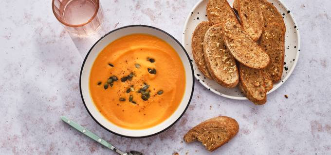

- 40 min
- 550 kcal
- Veganistisch


In ons nieuwste Allerhande-kookboek staan maar liefst 130 heerlijke en toegankelijke recepten. Nu verkrijgbaar voor €14,99 in de winkel en online.
Inkijkexemplaar en bestellenVers van de akkers, zo op ons bord. En dat elke dag opnieuw. In dit Allerhande kookboek laten we Nederland op z’n lekkerst zien. In de hoofdrol staan groente en fruit van eigen bodem en van het seizoen. Met al die lekkere, pure en verse ingrediënten krijg je meteen zin om aan de slag te gaan in de keuken. Van ontbijt, lunch en diner, tot taarten, borrelhapjes en bijgerechten. Allemaal met liefde bedacht en uitvoerig getest in Allerhande's testkeuken.
Het nieuwe Allerhande-magazine staat vol met lekkere én betaalbare recepten, maar ook snelle en gezonde gerechten ontbreken niet. Terug in het ritme komen was nog nooit zo makkelijk! Bekijk het magazine online of doe inspiratie op bij: